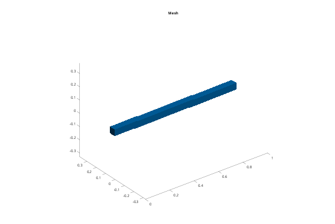
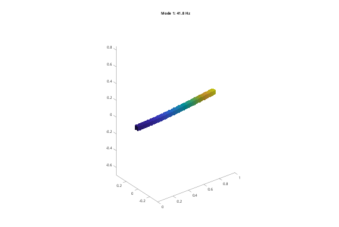

Contents
Tutorial 7 - Linear analysis: modes of a cantilever beam
The linear workflow (the nonlinear one is Tutorial 1):
- geometry (STL) -> fembd.Body (mesh + material)
- bodies -> fembd.Assembly (supports, connections)
- a.system() -> stiffness K and mass M -> fembd.modes
The result is checked against Euler-Bernoulli beam theory. Run it section by section (Ctrl+Enter), or render it with publish('tut07_modes').
addpath(fileparts(fileparts(mfilename('fullpath')))); % toolbox root out = fullfile(tempdir, 'femTutorials'); if ~isfolder(out), mkdir(out); end
1. Geometry
Any closed (watertight) STL works, for example a CAD export. Here we write a 1000 x 50 x 50 mm steel beam. STL files have no units: we model in millimetres and convert to metres when the body is created.
file = fullfile(out, 'beam.stl');
fembd.boxSTL(file, [0 0 0], [1000 50 50]);
2. Material and body
fembd.material(E, nu, rho) gives an isotropic linear-elastic material, in SI units. fembd.Body meshes the STL with Gmsh:
- Size - maximum element size, in STL units (mm here)
- Order - 2 = quadratic Tet10 elements (default), 1 = linear Tet4
- Scale - coordinate factor applied after meshing (mm -> m)
steel = fembd.material(210e9, 0.3, 7850); beam = fembd.Body(file, steel, Size = 25, Scale = 1e-3); fprintf('%s: %d nodes, %d Tet%d elements\n', beam.Name, beam.nNode, ... size(beam.T, 1), size(beam.T, 2));
beam: 2330 nodes, 1069 Tet10 elements
3. Assembly and supports
An assembly holds the bodies and everything that connects or supports them. Here there is one body, clamped at x = 0. Nodes are selected with a function of their coordinates X (n x 3, in metres after scaling).
a = fembd.Assembly(); a.add(beam); a.fix('beam', @(X) X(:,1) < 1e-9); % all 3 directions of the x = 0 face figure('Color', 'w'); a.plot(); title('Mesh');

4. System matrices
a.system() assembles K and M and removes all constraints. The full displacement vector u (3 dofs per node, [ux1 uy1 uz1 ux2 ...]) is related to the independent dofs q by u = T*q. K and M are already reduced: K = T'*Kfull*T and M = T'*Mfull*T.
[K, M, T] = a.system();
fprintf('full dofs: %d, independent dofs: %d\n', a.nDof, size(K, 1));
full dofs: 6990, independent dofs: 6879
5. Natural frequencies
fembd.modes returns the lowest frequencies (Hz) and mass-normalised mode shapes (V'*M*V = I).
[V, f] = fembd.modes(K, M, 6); disp(table((1:6)', f, 'VariableNames', {'mode', 'f_Hz'}));
mode f_Hz
____ ______
1 41.826
2 41.83
3 259.16
4 259.24
5 713.2
6 713.58
6. Check against beam theory
For a clamped-free beam: f_n = lambda_n^2/(2 pi) sqrt(E I/(rho A L^4)), with lambda_1 = 1.8751 and lambda_2 = 4.6941. The square section gives pairs of equal bending frequencies in y and z.
L = 1; h = 0.05; I = h^4/12; A = h^2; fEB = [1.875104 4.694091].^2/(2*pi)*sqrt(steel.E*I/(steel.rho*A*L^4)); fprintf('1st bending: FE %.2f Hz, Euler-Bernoulli %.2f Hz\n', f(1), fEB(1)); fprintf('2nd bending: FE %.2f Hz, Euler-Bernoulli %.2f Hz\n', f(3), fEB(2)); % The second mode is slightly lower in FE because Euler-Bernoulli ignores % shear deformation and rotary inertia.
1st bending: FE 41.83 Hz, Euler-Bernoulli 41.78 Hz 2nd bending: FE 259.16 Hz, Euler-Bernoulli 261.80 Hz
7. Plot a mode
Map q back to the full vector u = T*q and plot it. The second argument scales the deformation (here: largest displacement = 0.1 m).
u = T*V(:,1); figure('Color', 'w'); a.plot(u, 0.1/max(abs(u))); title(sprintf('Mode 1: %.1f Hz', f(1)));
